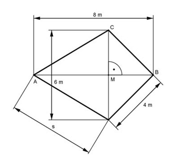

Pythagoras Aufgabe 76 Berechnen Sie die Länge der Seite s in cm.

Satz von Pythagoras im Dreieck MBC: MC = 6 m/2 = 3 m BC2 = BM2 + MC2 |-MC2 BM2 = BC2 - MC2 BM2 = 42 cm2 - 32 cm2 = 7 cm2 |√ h = 2,7 cm Satz von Pythagoras im Dreieck AMC: AM = ACB – MB = 8 cm – 2,7 cm = 5,3 cm s2 = MC2 + AM2 s2 = 32 cm2 + 5,32 s2 = 9 cm2 + 28,6 cm2 = 37,6 cm2 |√ s = 6,1 cm